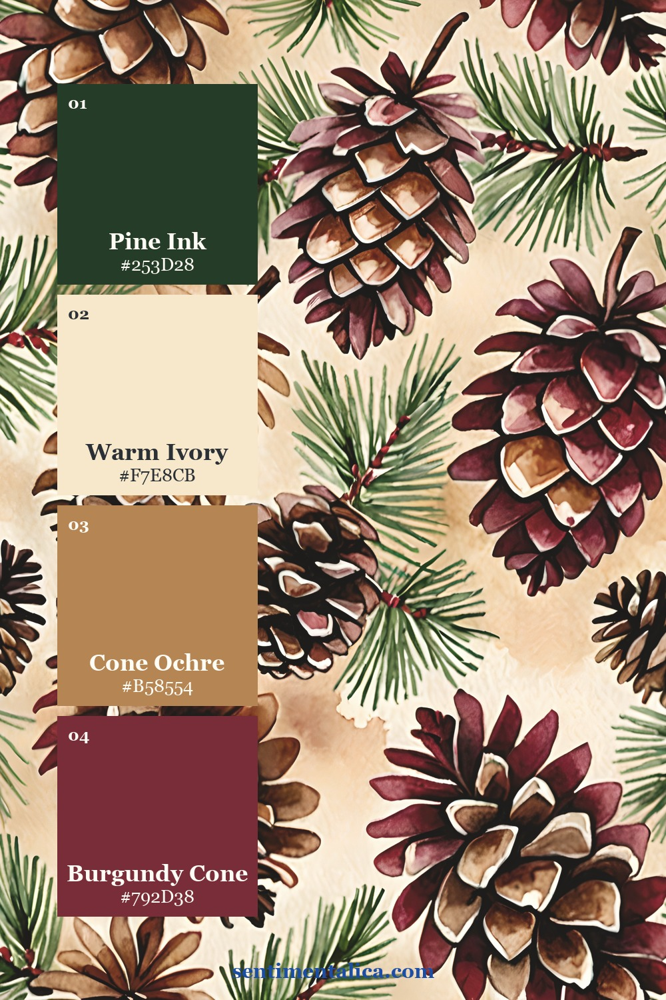
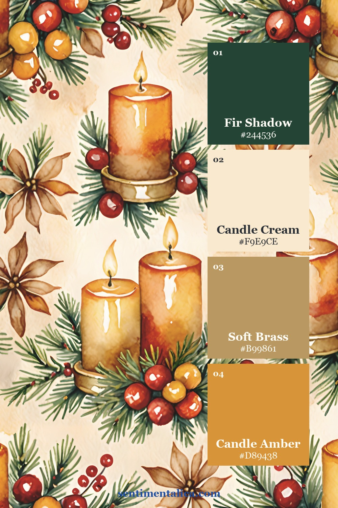
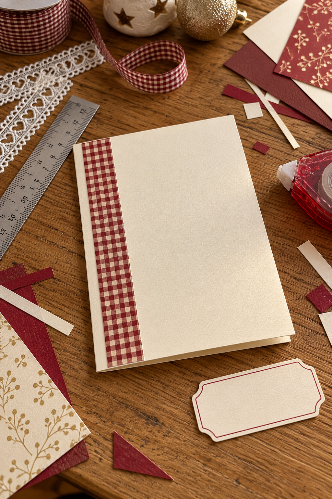
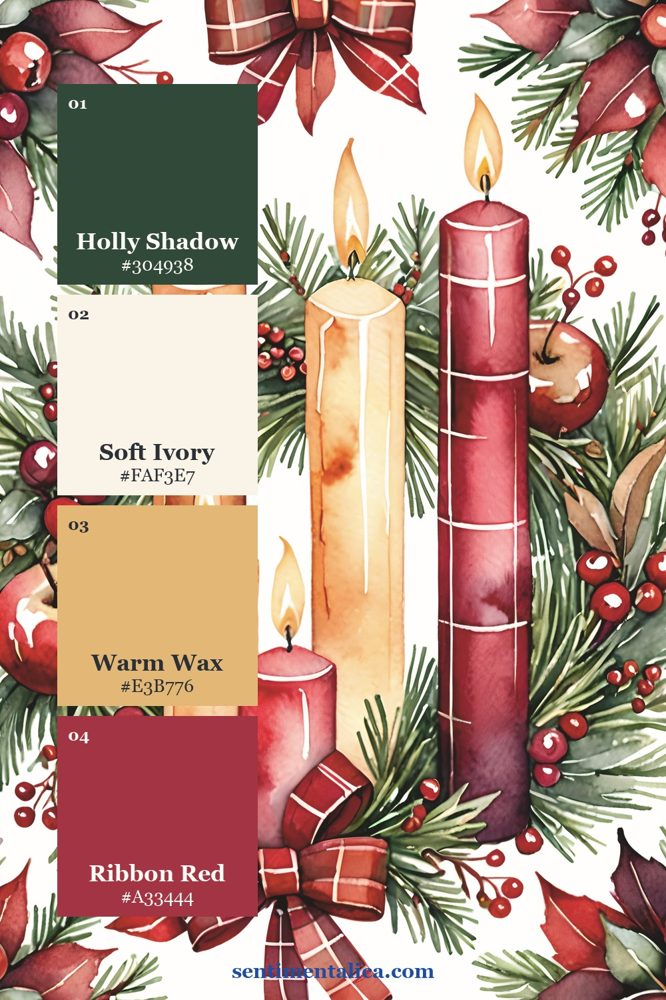

Burgundy plaid can make a Christmas card feel like a favorite winter scarf. Cover the whole front with it, then add a patterned label and a busy ribbon, and the greeting can disappear. A calmer card starts with one patterned shape and a generous patch of plain paper.
This is a card you build from printable artwork, cardstock, and a handwritten greeting. You do not need a special cutting machine. Gather a folded card blank, cream paper, a ruler, scissors or a paper trimmer, and adhesive suitable for paper.
Plan the quiet area first
Start with the greeting rather than the pattern. Write it lightly on scrap cream paper at the size you actually want to use. A short “Warm Christmas wishes” leaves more breathing room than a large decorative sentiment.
For a card front measuring roughly 5 by 7 inches, try a patterned panel about 3 by 5 inches. These are starting proportions, so use your own blank as the guide. Move the panel toward one side, then place your greeting over the quieter edge or on the remaining cream area.
Give the plaid one clear job: bringing the Christmas mood. Let plain paper carry the words.
Choose the color hierarchy
Use burgundy as the anchor and cream as the resting place. The contrast keeps a handwritten greeting readable even when the checked artwork is detailed. Repeat burgundy once, perhaps in the pen color or a narrow backing mat, rather than adding another large patterned piece.

Antique gold can be a supporting warmth instead of a shiny finishing treatment. A small gold-toned paper edge is enough. Keep it narrower than the cream border so the card still reads as paper and handwriting rather than a stack of frames.

Select a printable panel
The burgundy plaid Christmas image collection brings checked backgrounds together with gingerbread houses, bells, candles, wreaths, and holly. Choose one page for the main panel. You are cutting a piece from an image, so preview the crop before printing: a large candle or wreath may lose its shape in a narrow strip.
The real artwork examples below help you judge pattern scale and detail. They are source images for your own construction, rather than finished card fronts.
Check the crop before gluing
Print a small test on ordinary paper. Lay a scrap-paper window over it to see where the final rectangle would fall. With a checked design, an accidental sliver of a strong stripe can make an edge look crooked; shift the crop until the cut feels deliberate.
Cut the final panel, then arrange everything without adhesive. If the cream greeting label covers the most interesting part of the artwork, slide it off the panel and onto the card blank. That one move often solves the crowded feeling.

Finish with one small accent
Let amber supply the smallest note of brightness. A short piece of warm ribbon or a tiny plain-paper tab can echo the collection without adding another competing motif. If the image already has a bright bell or candle, leave that as the accent.

Glue from the largest piece to the smallest and smooth each layer flat. Use a spare sheet beneath the greeting while testing your pen, especially if your cream paper is textured. Leave the inside mostly plain, with a small offcut near the bottom if you want a gentle connection to the front.
Before making a second card, view the first at arm’s length. You should notice the greeting, the plaid, and one warm detail. If you see several equally loud areas, remove an embellishment. The useful leftover is not wasted: tuck it aside for a matching envelope seal you cut yourself.